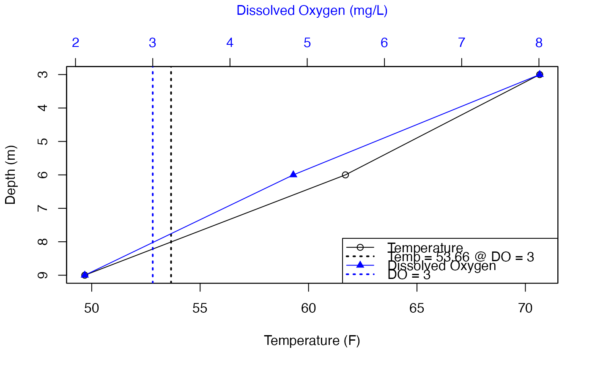

Calculates Temperature at Dissolved Oxygen Level X
tdox(data, col_date, col_depth, col_temp, col_do, do_x_val = 3)data frame
Column name, Date
Column name, Depth
Column name, temperature
Column name, Dissolved Oxygen
DO value from which to generate temperature. Default = 3
A data frame with min, mean, and max for each year and day.
Using depth profiles for both temperature and dissolved oxygen the temperature value at x DO is calculated.
Values for min, mean, and max are calculated for daily and annual values.
The calculation is the temperature at the depth where the value x of DO occurs. This is done by interpolating the DO value of x and associating the temperature.
The calculation is based on information in:
P.C. Jacobson, H.G. Stefan, and D.L. Pereira. 2010. Coldwater fish oxythermal habitat in Minnesota lakes: influence of total phosphorus, July air temperature, and relative depth. Canadian Journal of Fisheries and Aquatic Sciences 67(12):2002-2013. DOI 10.1139/F10-115
The calculation is achieved in R by using the function `glm(temp ~ do)` for each temperature and DO profile at each date and time. Then `predict.glm()` is used to generate the temperature at a DO value of x.
From these calculations min, mean, and max is generated for each day and year present in the data.
## Example 1, entire data set
# data
data <- laketest
# Columns
col_date <- "Date.Time"
col_depth <- "Depth"
col_temp <- "temp_F"
col_do <- "DO_conc"
do_x_val <- 3
tdox_3 <- tdox(data = data
, col_date = col_date
, col_depth = col_depth
, col_temp = col_temp
, col_do = col_do
, do_x_val = do_x_val)
tdox_3
#> # A tibble: 104 × 6
#> TimeFrame_Name TimeFrame_Value TDO_x_value min mean max
#> <chr> <chr> <dbl> <dbl> <dbl> <dbl>
#> 1 Year 2018 3 50.9 59.9 64.2
#> 2 Date 2018-07-02 3 52.6 52.6 52.6
#> 3 Date 2018-07-03 3 53.5 53.5 53.5
#> 4 Date 2018-07-04 3 53.7 53.7 53.7
#> 5 Date 2018-07-05 3 54.4 54.4 54.4
#> 6 Date 2018-07-06 3 54.8 54.8 54.8
#> 7 Date 2018-07-07 3 55.4 55.4 55.4
#> 8 Date 2018-07-08 3 55.7 55.7 55.7
#> 9 Date 2018-07-09 3 56.4 56.4 56.4
#> 10 Date 2018-07-10 3 56.8 56.8 56.8
#> # … with 94 more rows
#~~~~~~~~~~~~~~~~~~~~
## Example 2, small dataset and different DO value
do <- c(8.2, 8.2, 8.2, 8.2, 8, 7.5, 5.75, 4.4, 2.5)
temp <- c(26, 26, 26, 26, 25, 24.9, 24.8, 24.25, 23.5)
depth <- c(0.5, 1, 2, 3, 4, 5, 5.5, 6, 6.5)
date <- Sys.time()
data2 <- data.frame("datetime" = date
, "depth" = depth
, "temp" = temp
, "do" = do)
tdox_4 <- tdox(data = data2
, col_date = "datetime"
, col_depth = "depth"
, col_temp = "temp"
, col_do = "do"
, do_x_val = 4)
tdox_4
#> # A tibble: 2 × 6
#> TimeFrame_Name TimeFrame_Value TDO_x_value min mean max
#> <chr> <chr> <dbl> <dbl> <dbl> <dbl>
#> 1 Year 2022 4 24.1 24.1 24.1
#> 2 Date 2022-11-14 4 24.1 24.1 24.1
#~~~~~~~~~~~~~~~~~~~~
## Example 3, Single profile with plot
# Data
data <- laketest
# Columns
col_date <- "Date.Time"
col_depth <- "Depth"
col_temp <- "temp_F"
col_do <- "DO_conc"
do_x_val <- 3
df_plot <- data[data[, "Date.Time"] == "2018-07-03 12:00", ]
tdox_3_plot <- tdox(data = df_plot
, col_date = col_date
, col_depth = col_depth
, col_temp = col_temp
, col_do = col_do
, do_x_val = do_x_val)
tdox_3_plot
#> # A tibble: 2 × 6
#> TimeFrame_Name TimeFrame_Value TDO_x_value min mean max
#> <chr> <chr> <dbl> <dbl> <dbl> <dbl>
#> 1 Year 2018 3 53.7 53.7 53.7
#> 2 Date 2018-07-03 3 53.7 53.7 53.7
# Plot
## Temp, x-bottom, circles
plot(df_plot$temp_F, df_plot$Depth, col = "black"
, ylim = rev(range(df_plot$Depth))
, xlab = "Temperature (F)", ylab = "Depth (m)")
lines(df_plot$temp_F, df_plot$Depth, col = "black")
abline(v = 53.66, col = "black", lty = 3, lwd = 2)
## plot on top of existing plot
par(new=TRUE)
## Add DO
plot(df_plot$DO_conc, df_plot$Depth, col = "blue", pch = 17
, ylim = rev(range(df_plot$Depth))
, xaxt = "n", yaxt = "n", xlab = NA, ylab = NA)
lines(df_plot$DO_conc, df_plot$Depth, col = "blue")
axis(side = 3, col.axis = "blue", col.lab = "blue")
mtext("Dissolved Oxygen (mg/L)", side = 3, line = 3, col = "blue")
abline(v = 3, col = "blue", lty = 3, lwd = 2)
## Legend
legend("bottomright"
, c("Temperature", "Temp = 53.66 @ DO = 3", "Dissolved Oxygen", "DO = 3")
, col = c("black", "black", "blue", "blue")
, pch = c(21, NA, 17, NA)
, lty = c(1, 3, 1, 3)
, lwd = c(1, 2, 1, 2))
